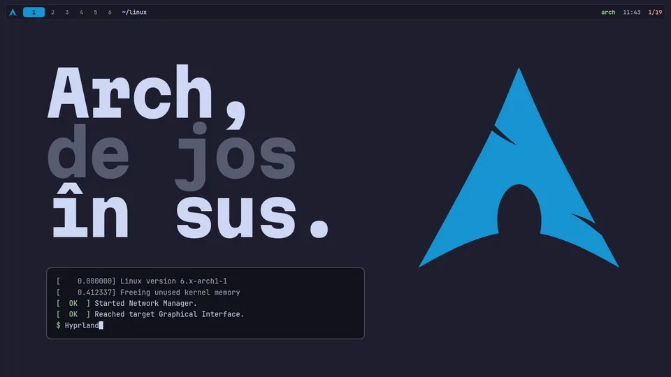
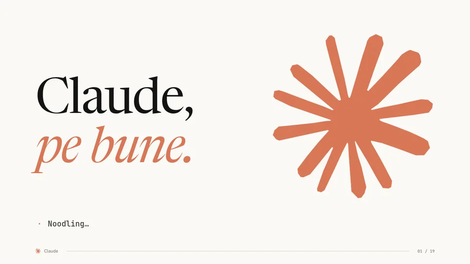
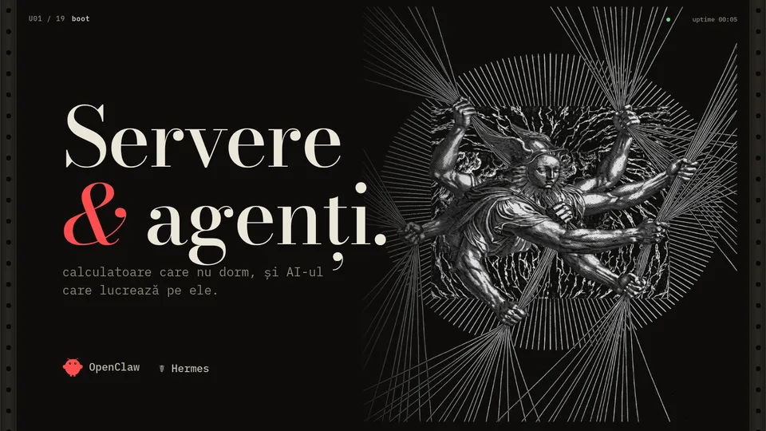

RACK U01–U03 · sept 2026 · ro
Ce prezentăm azi?

~/linux · kernel → pacman↵ deschide
Claude · tokeni → cheia API↵ deschide
U03 · VPS → OpenClaw, Hermes↵ deschide
~/linux · kernel → pacman↵ deschide
Claude · tokeni → cheia API↵ deschide
U03 · VPS → OpenClaw, Hermes↵ deschide